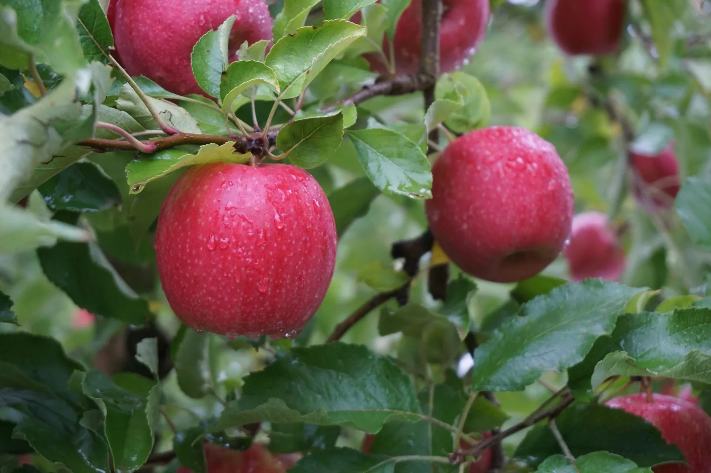

Horticulture
Nutrition for tree and berry crops through budburst, flowering, fruit development, harvest and post-harvest.
- Production priorities
- Marketable yield, pack-out and grade, fruit quality, and condition through storage or shelf life.
- Crops covered
- Dedicated Apple and Cherry guides are available, with sample nutrition programs to review with the team.